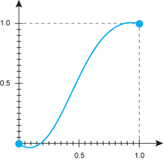

animation-timing-function
Устанавливает, согласно какой функции времени должна происходить анимация каждого цикла между ключевыми кадрами. Она представляет собой математическую функцию, показывающую, как быстро по времени меняется значение свойства. Начальная точка имеет координаты 0.0, 0.0, конечная — 1.0, 1.0, при этом функция по оси ординат может превышать эти значения в большую или меньшую сторону (рис. 1).

Рис. 1. Вид функции
Краткая информация
| Значение по умолчанию | ease |
|---|---|
| Наследуется | Нет |
| Применяется | Ко всем элементам, к псевдоэлементам ::before и ::after |
Синтаксис
animation-timing-function: ease | ease-in | ease-out | ease-in-out | linear |
step-start | step-end | steps | cubic-bezierЗначения
- ease
- Анимация начинается медленно, затем ускоряется и к концу движения опять замедляется. Аналогично cubic-bezier(0.25,0.1,0.25,1).
- ease-in
- Анимация медленно начинается, к концу ускоряется. Аналогично cubic-bezier(0.42,0,1,1).
- ease-out
- Анимация начинается быстро, к концу замедляется. Аналогично cubic-bezier(0,0,0.58,1).
- ease-in-out
- Анимация начинается и заканчивается медленно. Аналогично cubic-bezier(0.42,0,0.58,1).
- linear
- Одинаковая скорость от начала и до конца.
- step-start
- Как таковой анимации нет. Стилевые свойства сразу же принимают конечное значение.
- step-end
- Как таковой анимации нет. Стилевые свойства находятся в начальном значении заданное время, затем сразу же принимают конечное значение.
- steps
- Ступенчатая функция, имеющая заданное число шагов.
animation-timing-function: steps(<число>, start | end)
- Здесь: <число> — целое число больше нуля; start — задаёт полунепрерывную снизу функцию; end — задаёт полунепрерывную сверху функцию.
- cubic-bezier
- Задаёт функцию движения в виде кривой Безье.

ease

ease-in

ease-out
ease-in-out

linear

step-start

step-end

steps(2, start)
Чтобы посмотреть результат действия разных значений, наведите курсор на поле ниже. Время эффект перехода установлено как 3s.
Пример
<!DOCTYPE html>
<html>
<head>
<meta charset="utf-8">
<title>animation-timing-function</title>
<style>
.progress {
background: #333; /* Фон */
border: 2px solid #333; /* Рамка */
height: 20px; /* Высота */
position: relative; /* Относительное позиционирование */
}
.progress::before{
animation: progress 5s;
animation-timing-function: linear;
animation-duration: 5s;
animation-fill-mode: forwards;
-webkit-animation-name: progress;
-webkit-animation-timing-function: linear;
-webkit-animation-duration: 5s;
-webkit-animation-fill-mode: forwards;
content: '';
position: absolute; /* Абсолютное позиционирование */
height: 100%;
background: #FFA600; /* Фон */
}
@-webkit-keyframes progress {
from { width: 0; }
to { width: 100%; }
}
@keyframes progress {
from { width: 0; }
to { width: 100%; }
}
</style>
</head>
<body>
<div class="progress"></div>
</body>
</html>Объектная модель
Объект.style.animationTimingFunction
Примечание
Chrome, Safari и Android поддерживают свойство -webkit-animation-timing-function.
Opera до версии 12.10 поддерживает свойство -o-animation-timing-function.
Firefox до версии 16 поддерживает свойство -moz-animation-timing-function.
Спецификация
| Спецификация | Статус |
|---|---|
| CSS Animations | Рабочий проект |
Браузеры
| Internet Explorer | Chrome | Opera | Safari | Firefox | ||
| 10 | 3 | 12 | 12.10 | 4 | 5 | 16 |
| Android | Firefox Mobile | Opera Mobile | Safari Mobile | ||
| 2 | 5 | 16 | 12 | 12.10 | 4 |